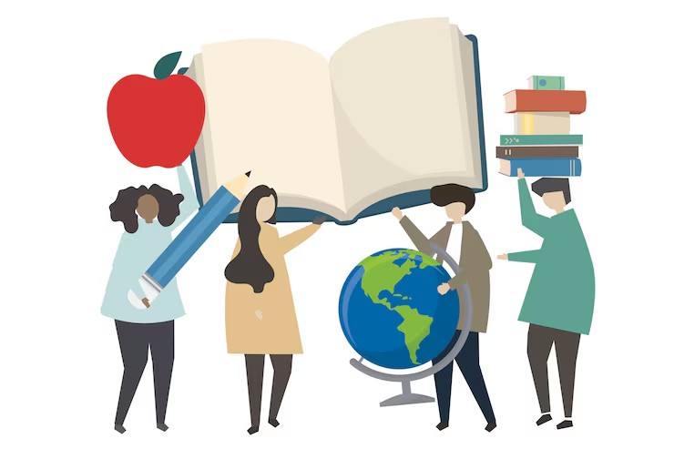

Educação para o Futuro
Oferecemos reforço escolar, oficinas de leitura e acesso à tecnologia para crianças e adolescentes de comunidades carentes, contribuindo para a permanência na escola e para a construção de novos sonhos.
As aulas são conduzidas por voluntários e educadores capacitados, em turnos opostos ao horário escolar.
800 estudantes beneficiados
Apoiar este projeto